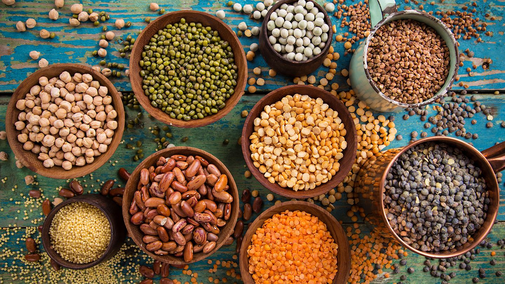
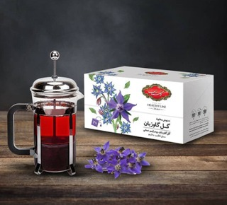
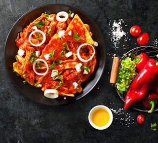

وبلاگ

راهنمای کامل روش پخت انواع حبوبات
راهنمای کامل روش پخت حبوبات مختلف حبوبات در هر آشپزخانهای جایگاه ویژهای دارند. این دانههای مغذی در وعدههای غذایی روزمره ما انسانها نقشی پررنگ دارند
ادامه مطلب
تاریخچه برنج
تاریخچه برنج برنج ماده اصلی غذایی بیش از یک سوم جمعیت جهان است، در شرق آسیا و منطقه خاورمیانه نیز برنج یکی از پر اهمیتترین
ادامه مطلب
زرشک راز سلامتی
زرشک، سرآغازی برای سلامت قلب و آرامش فواید زرشک که با نام علمی Berberis vulgaris شناخته میشود فراوان و برای سلامتی مفید است. در گذشته
ادامه مطلب
تاریخچه برنج : روشهای تشخیص برنج مرغوب ایرانی
روشهای تشخیص برنج مرغوب ایران برنج، عضو جدایی ناپذیره سفره ما ایرانیهاست. تقریبا در جوامع خاورمیانه و خصوصا شرق آسیا برنج قوت غالب اکثر مردم
ادامه مطلب

زعفران: انواع زعفران و ویژگی زعفران ایرانی
زعفران: انواع زعفران و ویژگی زعفران ایرانی زعفران از دیرباز نزد ایرانیان و سایر جهانیان از ادویههای محبوب و گرانبها محسوب میشده. زعفران به خاطر
ادامه مطلب
خواص جوز هندی
از خواص جوز هندی چه میدانیدجادوی ادویهها در طعم دادن به انواع غذاها و نوشیدنیها کلید خوشمزه شدن آنها محسوب میشود. جوز هندی یکی از
ادامه مطلب

خواص منحصربهفرد چای سبز
خواص منحصر به فرد چای سبز چای سبز به دلیل حضور مقدار زیاد آنتیاکسیدان قوی اپیگالوکاتچین گالات(EGCG)، میتواند در پیشگیری از برخی انواع سرطانها مانند
ادامه مطلب
خواص منحصربهفرد چای سیاه
خواص منحصر به فرد چای سیاه چای سیاه که اغلب ما با نام چای میشناسیم دارای ویژگیها و فواید خاصی است که آن را از
ادامه مطلب

تفاوت چای سیاه و سبز در چیست؟
تفاوت چای سیاه و سبز در چیست؟ چای سبز سالم تر است یا چای سیاه؟
ادامه مطلب
طرز تهیه تاکو غذای مشهور مکزیکی
طرز تهیه تاکو مکزیکی یکی از غذاهای معروف مکزیکی تاکو است، تاکو شهرت جهانی دارد و در همه نقاط دنیا طرفداران فراوانی پیدا کرده است.
ادامه مطلب
حبوبات منبع عالی پروتئین و انرژی
حبوبات: منبع پروتئین و انرژی حبوبات، یکی از پرمصرفترین مادههای غذایی در سر سفره ما ایرانیان است که به خاطر ارزش غذایی بسیار بالایشان جایگاه
ادامه مطلب

رازهایی درباره فرآوری و تولید چای
تاریخچه تولید چای؛ رازهایی درباره فرآوری و تولید چای تولید چای از اینجا اهمیت دارد که چای، یکی از جداییناپذیرترین نوشیدنیهای برای مردم ایران محسوب
ادامه مطلب
تاریخچه برنج قهوهای
تاریخچه تولید و مصرف برنج قهوهای در گذشته ایران و بسیاری از کشورهای جهان، برنج سفید را تنها نوع برنج موجود میدانستند. گذرزمان باعث شد
ادامه مطلب

بهترین دمنوشهای آرامبخش
تاریخچه تولید چای؛ رازهایی درباره فرآوری و تولید چای فنجانی نوشیدنی گرم میتواند یک عصر زیبا و آرام را برایتان به ارمغان بیاورد. دمنوشهای آرامبخش
ادامه مطلب

برگر عدس
اگر دوست دارید که یک برگر گیاهی و کاملاً سالم داشته باشید برگر عدس یک انتخاب مناسب برای شماست. عدس سرشار از پروتئین است و
ادامه مطلب
باندنت کیک شکلاتی
باندنت کیک مانند سایر کیکها به روش عادی پخته میشود. اسم این کیک از ظرف باندنت گرفته شده است. در واقع مایع و مواد کیک
ادامه مطلب

آش انار
برای تهیه این آش از شب قبل حبوبات را بخیسانید. در ادامه برنج، بلغور، لوبیا و عدس را بشورید و داخل یک قابلمه مناسب بریزید. در این مرحله چند لیوان آب به قابلمه…
ادامه مطلب
رولت مرغ
پیاز و سیر را در کاسهی بزرگی رنده کنید. سپس مرغ چرخ شده، پودر سوخاری، تخم مرغ، زعفران دمکرده، نمک، فلفل سیاه، پودر پاپریکا و پودر گوجه را به آن اضافه کنید و …
ادامه مطلب
کیک ردولوت
مواد لازم آرد سفید گلستان یک و نیم پیمانهشکر یک و نیم پیمانهتخم مرغ دو عددباتر میلک یک پیمانهروغن مایع حدود یک پیمانهبیکینگ پودر گلستان
ادامه مطلب

استیک با سس قارچ
استیک را باید در تابه چدنی سرخ کرده و در هر نوبت یک استیک را در تابه قرار داد. قطعات گوشت را کمی می کوبیم. دو طرف هر قطعه را به نمک و فلفل آغشته می کنیم…
ادامه مطلب

ماکارونی با سبزیجات
ابتدا ماکارانیها را در ظرفی به همراه آب، روغن مایع و نمک میریزیم تا کمی بپزد. در این حین پیازها را خرد کرده و روی روغن تفت میدهیم تا طلایی شود…
ادامه مطلب

سوپ مکزیکی
گوشت بوقلمون را در یک ماهیتابه بزرگ ریخته، آب روی آن بریزید تا روی آن را بپوشاند و به مدت نیم ساعت آن را بپزید. گوشت را از مایع آن بیرون آورده…
ادامه مطلب

چیلاکیله
احتمالا نام چیلا کیله را نشنیده باشید ولی اگر یکبار این غذای فوقالعاده خوشمزه را تهیه کنید و نوش جان کنید جزئی جدانشدنی از فهرست
ادامه مطلب
زرشک راز سلامتی
زرشک، سرآغازی برای سلامت قلب و آرامش فواید زرشک که با نام علمی Berberis vulgaris شناخته میشود فراوان و برای سلامتی مفید است. در گذشته
ادامه مطلب